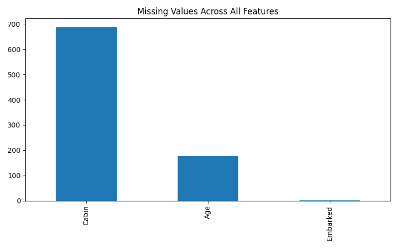
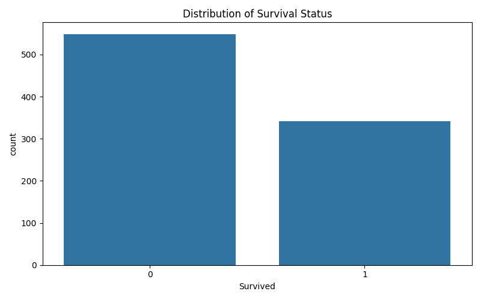
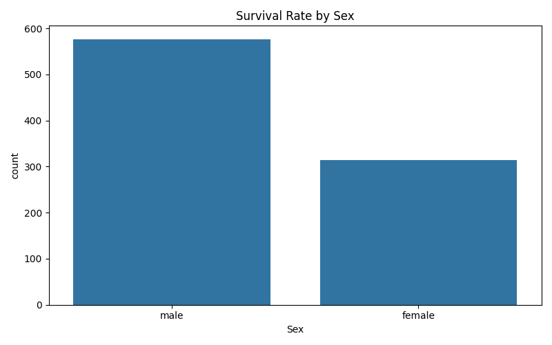
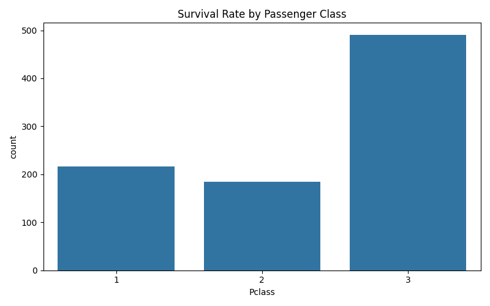
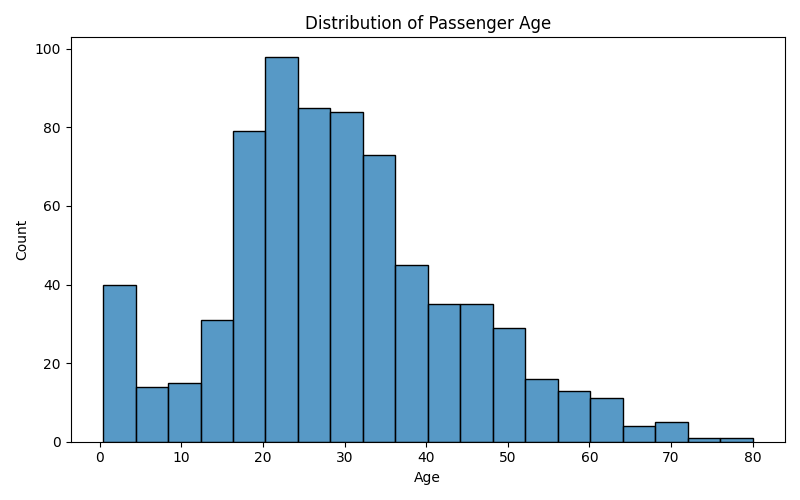
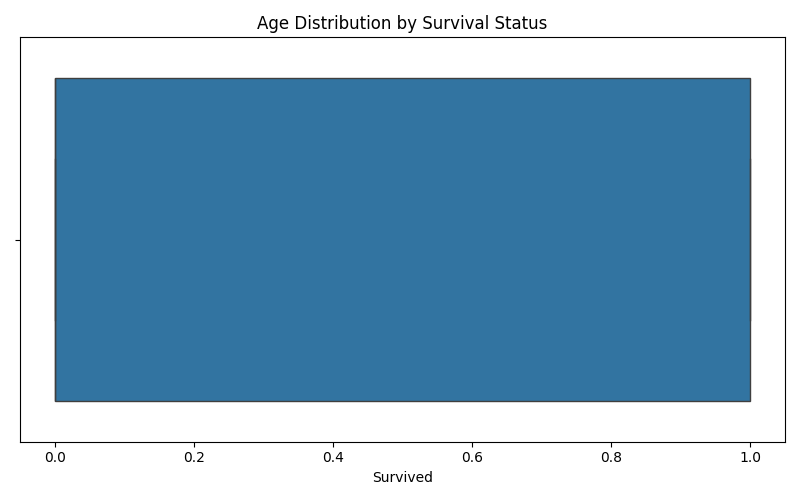
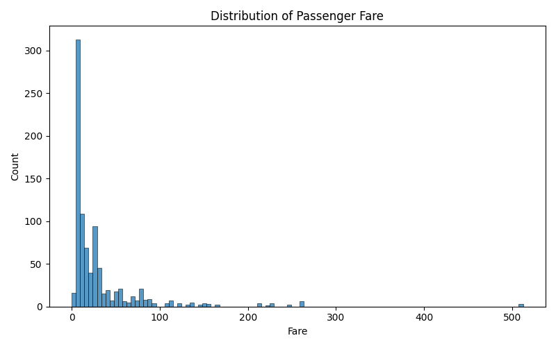
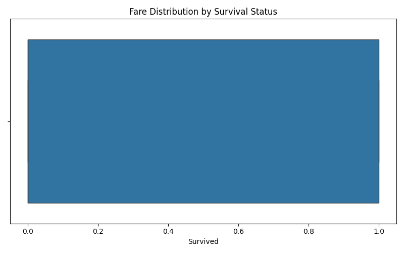
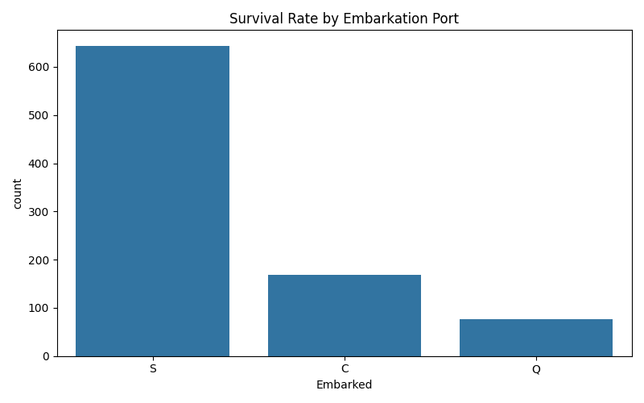

Titanic Survival Prediction Dataset Initial Analysis
This dataset provides information about passengers on the Titanic, with the primary objective of predicting survival. It consists of 891 entries and 12 features, covering demographics, travel details, and survival status. Key observations include significant missing values in 'Age' and 'Cabin', and the presence of categorical and text-based features requiring careful preprocessing and feature engineering for effective model training.
Dataset Overview
The dataset contains 891 rows and 12 columns, providing a moderate size for analysis and model training.
• The dataset comprises a mix of numerical (int64, float64) and object (string) data types. Key features include 'Survived' (target variable), 'Pclass', 'Sex', 'Age', 'SibSp', 'Parch', 'Fare', 'Cabin', and 'Embarked'.
• 'Survived' is the binary target variable, indicating whether a passenger survived (1) or not (0).
Missing Values Analysis
⚠ Missing values are present in three critical columns: 'Age', 'Cabin', and 'Embarked'. These require careful handling before model training.
Cabin Missingness
687 missing values (approximately 77.1% of the dataset). This high percentage suggests that 'Cabin' might be difficult to impute directly and could be better used as a binary 'HasCabin' feature or dropped.
Age Missingness
177 missing values (approximately 19.9% of the dataset). Imputation strategies such as mean, median, or more sophisticated methods (e.g., using other features like Pclass, Sex, or Title) will be necessary.
Embarked Missingness
2 missing values (approximately 0.2% of the dataset). Given the small number, these can be easily imputed with the mode of the 'Embarked' column.
Feature Analysis and Potential Insights
• 'Sex', 'Pclass', and 'Embarked' are categorical and are expected to be strong predictors of survival. 'Sex' (male/female) and 'Pclass' (1st, 2nd, 3rd) are historically known to correlate highly with survival rates.
• 'Age' and 'Fare' are continuous numerical features. 'Age' might show survival differences for children and the elderly, while 'Fare' could correlate with 'Pclass' and overall economic status, influencing survival chances.
• 'SibSp' (siblings/spouses aboard) and 'Parch' (parents/children aboard) can be combined to create a 'FamilySize' feature, which might indicate whether a passenger was traveling alone or with family, potentially affecting survival.
• 'Name' can be used for feature engineering to extract titles (e.g., Mr., Mrs., Miss, Master), which often correlate with age, sex, and social status. 'Ticket' is highly varied and might be challenging to use directly without complex feature engineering. 'PassengerId' is a unique identifier and should be dropped for modeling.
Missing Values Across All Features
To visually identify the extent of missing data in each column, especially for 'Age', 'Cabin', and 'Embarked'.

Distribution of Survival Status
To understand the balance of the target variable (Survived vs. Not Survived) and identify potential class imbalance.

Survival Rate by Sex
To explore the relationship between gender and survival, expecting higher survival rates for females.

Survival Rate by Passenger Class
To investigate the impact of passenger class on survival, anticipating higher survival for higher classes.

Distribution of Passenger Age
To understand the age distribution of passengers, which is crucial for imputation and identifying age-related survival patterns.

Age Distribution by Survival Status
To compare the age distributions of survivors versus non-survivors, potentially revealing age groups with higher or lower survival rates.

Distribution of Passenger Fare
To examine the distribution of ticket fares, which might be skewed and correlated with passenger class.

Fare Distribution by Survival Status
To assess if higher fares (potentially indicating higher class or better cabin access) correlate with increased survival.

Survival Rate by Embarkation Port
To check for any correlation between the port of embarkation and survival rates.

Recommendations
Handle missing values: Impute 'Age' (e.g., using median or more advanced methods like MICE/KNN), impute 'Embarked' with its mode, and consider creating a 'HasCabin' binary feature for 'Cabin' due to high missingness.
Perform feature engineering: Extract titles (e.g., Mr., Mrs., Miss, Master) from the 'Name' column. Create a 'FamilySize' feature by combining 'SibSp' and 'Parch'.
Encode categorical variables: Convert 'Sex', 'Pclass', and 'Embarked' into numerical representations using one-hot encoding or label encoding.
Drop irrelevant features: Remove 'PassengerId', 'Name' (after title extraction), and 'Ticket' from the dataset as they are unlikely to be directly useful for modeling or require complex engineering.
Scale numerical features: Apply standardization or normalization to numerical features like 'Age', 'Fare', and 'FamilySize' to ensure they contribute equally to the model.
Select and train a classification model: Explore various classification algorithms such as Logistic Regression, Random Forest, Gradient Boosting Machines (e.g., XGBoost, LightGBM), or Support Vector Machines.
Evaluate model performance: Use appropriate metrics like accuracy, precision, recall, F1-score, and ROC-AUC, especially considering potential class imbalance in the 'Survived' variable.
Perform cross-validation: Implement k-fold cross-validation to ensure the robustness and generalization ability of the chosen model.